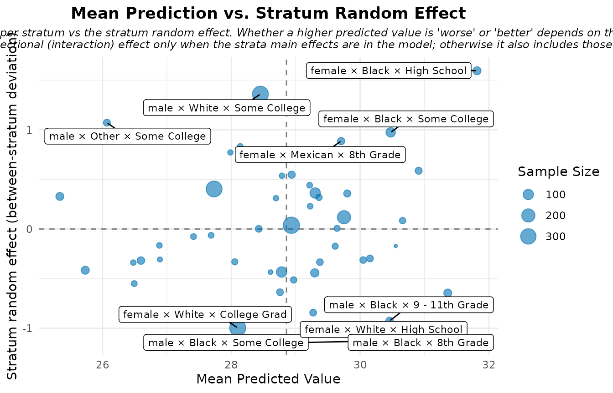

Interpreting MAIHDA Plots and Diagnostics
Hamid Bulut
2026-06-07
Source:vignettes/interpreting_plots.Rmd
interpreting_plots.RmdOverview
plot() on a fitted MAIHDA model gives you several views
of the same model, each answering a different question. This vignette
explains, for every plot type, what it shows, how to read it,
and what not to conclude from it. Calling
plot() with no type draws them all; pass a
type to get one.
We use one shared Gaussian model throughout so the views are directly comparable.
library(MAIHDA)
data("maihda_health_data")
health_complete <- maihda_health_data[complete.cases(
maihda_health_data[, c("BMI", "Age", "Gender", "Race", "Education")]
), ]
model <- fit_maihda(
BMI ~ Age + Gender + Race + Education + (1 | Gender:Race:Education),
data = health_complete
)
vpc – variance partition
The VPC plot shows how the total unexplained variance splits into a between-stratum component (the numerator of the VPC/ICC), any other random-effect components, and the within-stratum residual.
plot(model, type = "vpc")
How to read it. The between-stratum slice is the
share of unexplained variation that lies between intersectional groups.
Because this model includes covariates, it is a conditional VPC
(net of the fixed effects); the headline, total between-stratum share is
the one read from a null model outcome ~ 1 + (1 | stratum).
For non-Gaussian models this split is on the latent scale.
predicted – stratum predictions with intervals
plot(model, type = "predicted")
How to read it. Each point is a stratum’s model-based prediction with a 95% interval, ordered so you can see which intersections sit above or below the average. The estimates are shrunken toward the overall mean – small strata are pulled in more – which is the protective feature of multilevel modelling against over-interpreting noisy small groups. For a binomial model the axis is the predicted probability instead of the outcome mean.
obs_vs_shrunken – shrinkage made visible
plot(model, type = "obs_vs_shrunken")
How to read it. This contrasts the raw observed stratum means with the model’s shrunken estimates. Points far from the diagonal are strata whose raw mean was pulled substantially toward the centre – typically the smallest, noisiest cells. It is a sanity check on how much the multilevel model is regularising, not a statement about which strata are “really” high or low.
risk_vs_effect – mean prediction vs. random effect
plot(model, type = "risk_vs_effect")
How to read it. Each stratum is placed by its mean predicted outcome (x) and its stratum random effect (y), splitting the plane into quadrants. Despite the type name, this is deliberately not framed as “risk”: whether a higher value is worse or better depends entirely on the outcome (high BMI vs. high test score), so read the axes in the context of your own outcome rather than as a fixed good/bad map.
effect_decomp – additive vs. intersection-specific
plot(model, type = "effect_decomp")
How to read it. This separates, for each stratum, the part of its deviation from the grand mean that is explained by the additive main effects from the intersection-specific part (the stratum random effect, what is left over after the additive effects). Large intersection-specific bars are the candidate “more/less than the sum of the parts” intersections – but treat them as hypotheses to probe, not as confirmed interactions, since they also absorb sample composition and estimation noise.
ternary – relative signal diagnostic
The ternary plot needs the optional ggtern package, so
it is only drawn here when that package is installed.
plot(model, type = "ternary")
How to read it. For each stratum the plot normalises three magnitudes to sum to 1: the additive signal (how far the fixed-effect-only prediction sits from the grand mean), the intersection-specific signal (the size of the stratum random effect), and the uncertainty in that estimate. A stratum near the “uncertainty” corner is dominated by noise; one near the “intersection” corner carries signal beyond the additive main effects.
What it is not. This is a relative-magnitude diagnostic, not a formal variance decomposition – the three shares are rescaled per stratum, so they compare the balance of signal across strata, not absolute variance contributions.
prediction_deviation – the deviation dashboard
plot(model, type = "prediction_deviation")
How to read it. This two-panel, publication-oriented dashboard highlights the most notable cases or strata. What counts as “notable” depends on the model: the largest deviation from the mean prediction (Gaussian/Poisson), the largest absolute deviance residual (binomial), or the most surprising observation (ordinal). The labelled points are notable, not regression-diagnostic outliers – do not read them as points to delete.
Group-comparison plots
When you fit across a higher-level grouping variable with
compare_maihda_groups() (or
maihda(group = ...)), two extra plot types become available
– group_vpc and group_components (also
reachable as type = "vpc" and
type = "components" on the comparison object). Those are
covered in the group comparison
vignette.
See also
- Introduction to MAIHDA – the end-to-end workflow.
- MAIHDA for binary outcomes – how these plots adapt to logistic models.